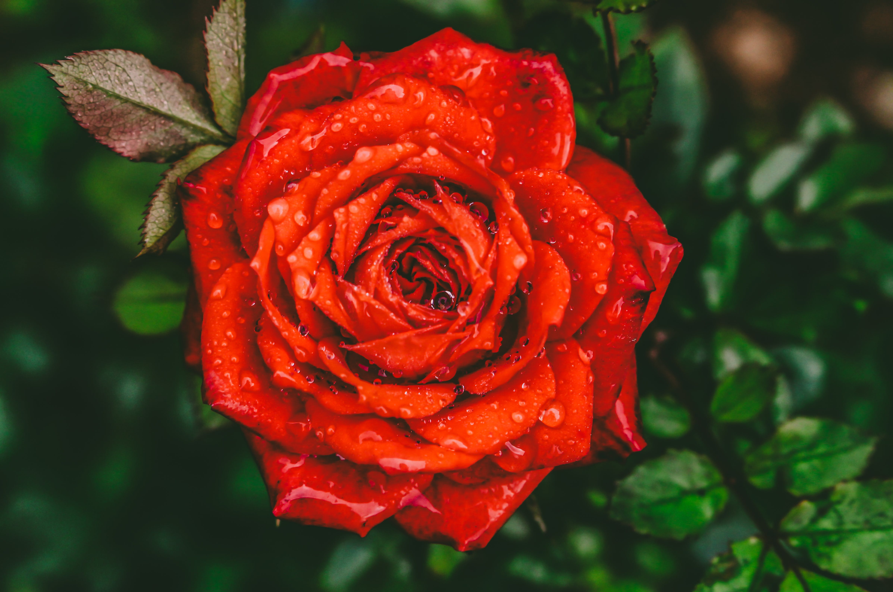
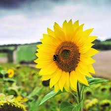

According to the Guinness Book of World Records, roses are the oldest species of plant to be grown as decoration. The rose (genus Rosa, family Rosaceae) is the oldest species of plant cultivated and used for decorative purposes
Sunflowers plants display a behavior called heliotropism. The flower buds and young blossoms will face east in the morning and follow the sun as the earth moves during the day. 6. THE WORLD'S TALLESTSUNFLOWER REACHES 30 FEET AND 1 INCH
